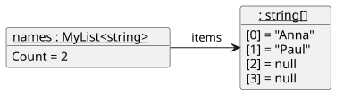

18 Building List<T>
An array can’t grow, but a trick makes it look as if it could. This is the idea behind the most used collection in .NET, List<T>. It is called an array list, and it has nothing to do with nodes: the list keeps its elements in a normal array, and if the array is full, it moves them to a bigger one.
Two numbers matter: Count is how many elements the list really holds, and Capacity is how many fit into the current array.

[2] and [3] already exist, but they aren’t part of the list, because Count says that only the first two elements count.
18.1 Adding Elements
public class MyList<T>
{
public const int InitialCapacity = 4;
private T[] _items = new T[InitialCapacity];
public int Count { get; private set; }
public int Capacity
{
get
{
return _items.Length;
}
}
public void Add(T value)
{
if (Count == Capacity)
{
Grow();
}
_items[Count] = value;
Count++;
}
private void Grow()
{
T[] biggerArray = new T[Capacity * 2];
for (int i = 0; i < Count; i++)
{
biggerArray[i] = _items[i];
}
_items = biggerArray;
}
}Count is also the index of the next free place. In Grow, the line _items = biggerArray; redirects one single arrow, and the garbage collector takes care of the old array. If the elements are objects, only their references are copied.
With a capacity of 4, the fifth Add copies 4 elements and the capacity becomes 8. The ninth copies 8, and the capacity becomes 16. If the list grew by only one place, every Add would copy all elements. When it doubles, copying gets rarer the longer the list gets.
18.2 The Indexer
An indexer lets you write names[0] for your own class. It looks like a property with the name this and a parameter in square brackets:
public T? this[int index]
{
get
{
if (index < 0 || index >= Count)
{
return default;
}
return _items[index];
}
}Count, not Capacity
_items[1] doesn’t crash in an array with four places, but it may not be an element of the list. The valid indices are 0 to Count - 1.
18.3 The Collections of .NET
In real projects you use the ready-made classes in System.Collections.Generic, which is part of the implicit usings:
| Class | Built as | Use it for |
|---|---|---|
List<T> |
Array list | Your default choice for any list |
Stack<T> |
Array inside | Last in, first out |
Queue<T> |
Array inside | First in, first out |
LinkedList<T> |
Doubly linked list | Many inserts and removes at known positions |
List<string> pupils = new List<string>();
pupils.Add("Anna");
Console.WriteLine(pupils[0]); // Anna
Stack<string> stack = new Stack<string>();
stack.Push("first");
Console.WriteLine(stack.Pop()); // first
Queue<string> queue = new Queue<string>();
queue.Enqueue("first");
Console.WriteLine(queue.Dequeue()); // firstIn everyday programs, List<T> is usually the best choice, because reading is far more common than inserting in the middle.
Unlike MyStack<T>, Stack<T> and Queue<T> stop the program with an exception if they are empty, and so does an invalid index on a List<T>. Use TryPop and TryDequeue, or check Count first.
The .NET classes are tested in millions of programs. We write our own because there is no better way to learn how references work, and because you can only choose the right collection if you know what it does inside. In exercises on linked lists, don’t use the .NET classes unless the task says so.
Check your understanding of this chapter with the Building a List Self-Check Quiz.
The part on .NET has its own quiz: the Generic Collections in .NET Self-Check Quiz.